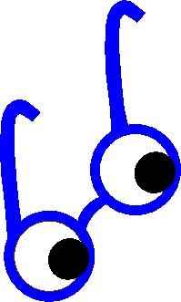

To better understand the document tree, consider a web page that has a head and body section, has a page title, and contains a DIV element that itself contains an H1 header and two paragraphs. One of the paragraphs contains italicized text; the other has an image--not an uncommon web page.
Second paragraph with image. 